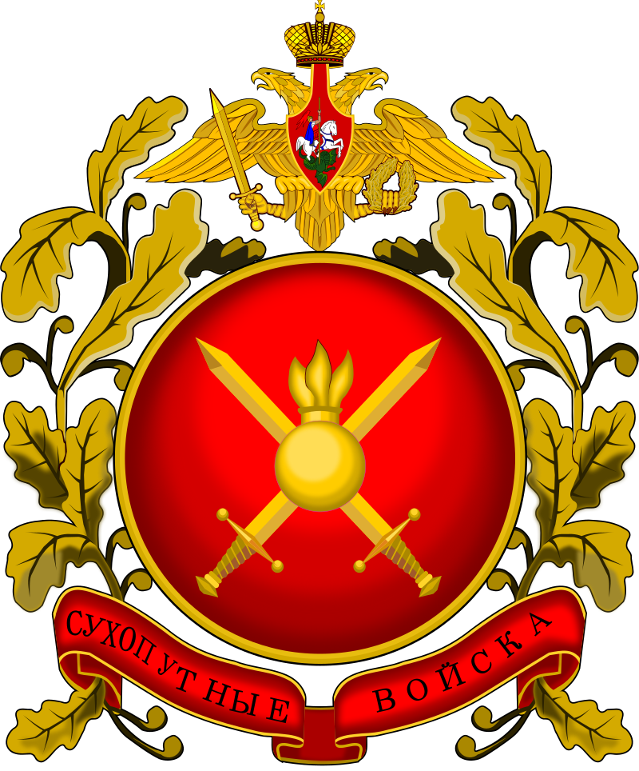
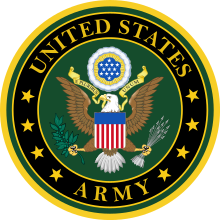

1. RUSSIAN ARMY
As the Soviet Union dissolved, efforts were made to keep the Soviet Armed Forces as a single military structure for the new Commonwealth of Independent States. The last Minister of Defence of the Soviet Union, Marshal Yevgeny Shaposhnikov, was appointed supreme commander of the CIS Armed Forces in December 1991.[6] Among the numerous treaties signed by the former republics, in order to direct the transition period, was a temporary agreement on general purpose forces, signed in Minsk on 14 February 1992. However, once it became clear that Ukraine (and potentially the other republics) was determined to undermine the concept of joint general purpose forces and form their own armed forces, the new Russian government moved to form its own armed forces.[6]
2. USA ARMY
The United States Army (USA) is the land warfare service branch of the United States Armed Forces. It is one of the seven uniformed services of the United States, and is designated as the Army of the United States in the United States Constitution.[14] As the oldest and most senior branch of the U.S. military in order of precedence,[15] the modern U.S. Army has its roots in the Continental Army, which was formed (14 June 1775) to fight the American Revolutionary War (1775–1783)—before the United States of America was established as a country.[16] After the Revolutionary War, the Congress of the Confederation created the United States Army on 3 June 1784 to replace the disbanded Continental Army.[17][18] The United States Army considers itself descended from the Continental Army, and dates its institutional inception from the origin of that armed force in 1775.[16]
3. INDIAN ARMY

The Indian Army (Hindi: Bhāratīya Thala Sēnā) is the land-based branch and the largest component of the Indian Armed Forces. The President of India is the Supreme Commander of the Indian Army,[6] and it is commanded by the Chief of Army Staff (COAS), who is a four-star general. Two officers have been conferred with the rank of field marshal, a five-star rank, which is a ceremonial position of great honour. The Indian Army originated from the armies of the East India Company, which eventually became the British Indian Army, and the armies of the princely states, which finally became the national army after independence. The units and regiments of the Indian Army have diverse histories and have participated in a number of battles and campaigns across the world, earning many battle and theatre honours before and after Independence.[7]